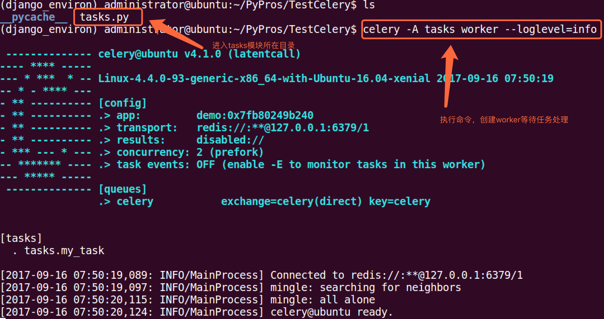
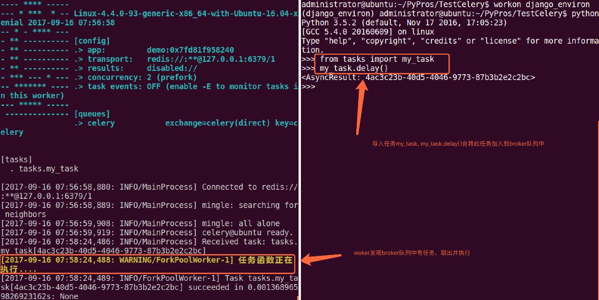
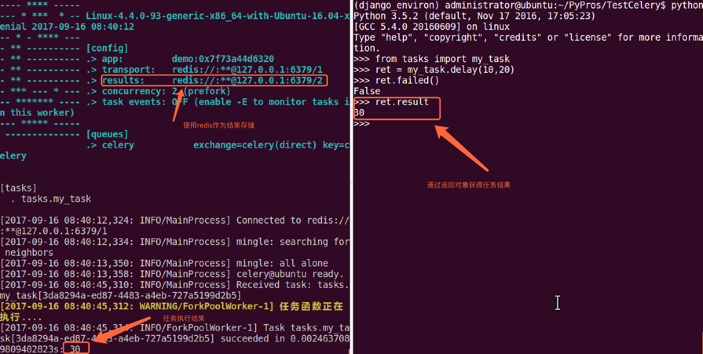

使用celery第一件要做的最为重要的事情是需要先创建一个Celery实例，我们一般叫做celery应用，或者更简单直接叫做一个app。app应用是我们使用celery所有功能的入口，比如创建任务，管理任务等，在使用celery的时候，app必须能够被其他的模块导入。
1.创建应用
我们首先创建tasks.py模块, 其内容为:
from celery import Celery
# 我们这里案例使用redis作为broker
app = Celery('demo', broker='redis://:332572@127.0.0.1/1')
# 创建任务函数
@app.task
def my_task():
print("任务函数正在执行....")
Celery第一个参数是给其设定一个名字， 第二参数我们设定一个中间人broker, 在这里我们使用Redis作为中间人。my_task函数是我们编写的一个任务函数， 通过加上装饰器app.task, 将其注册到broker的队列中。
现在我们在创建一个worker， 等待处理队列中的任务.打开终端，cd到tasks.py同级目录中，执行命令:
celery -A tasks worker --loglevel=info
显示效果如下: 
2.调用任务
任务加入到broker队列中，以便刚才我们创建的celery workder服务器能够从队列中取出任务并执行。如何将任务函数加入到队列中，可使用delay()。
进入python终端, 执行如下代码:
from tasks import my_task
my_task.delay()
执行效果如下:  我们通过worker的控制台，可以看到我们的任务被worker处理。调用一个任务函数，将会返回一个AsyncResult对象，这个对象可以用来检查任务的状态或者获得任务的返回值。
3.存储结果
如果我们想跟踪任务的状态，Celery需要将结果保存到某个地方。有几种保存的方案可选:SQLAlchemy、Django ORM、Memcached、 Redis、RPC (RabbitMQ/AMQP)。
例子我们仍然使用Redis作为存储结果的方案，任务结果存储配置我们通过Celery的backend参数来设定。我们将tasks模块修改如下:
from celery import Celery
# 我们这里案例使用redis作为broker
app = Celery('demo',
backend='redis://:332572@127.0.0.1:6379/2',
broker='redis://:332572@127.0.0.1:6379/1')
# 创建任务函数
@app.task
def my_task(a, b):
print("任务函数正在执行....")
return a + b
我们给Celery增加了backend参数，指定redis作为结果存储,并将任务函数修改为两个参数，并且有返回值。 
更多关于result对象信息，请参阅下列网址: http://docs.celeryproject.org/en/latest/reference/celery.result.html#module-celery.result